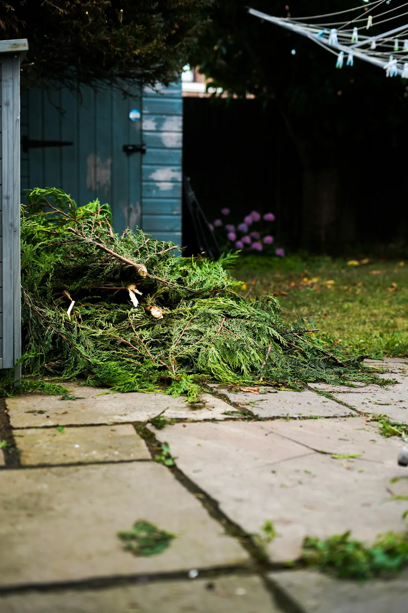

Yard waste & brush removal in Winnipeg
yard waste
The pile the city's pickup will not touch
City collection takes bagged leaves and grass on a schedule. It does not take a downed tree, a hedge you just tore out, or forty feet of brush piled behind the garage.

This is the direct crossover with our landscaping side — the same crews have been doing this work on Winnipeg properties for years. It goes to composting and organics facilities, not the landfill.
What we do
- Branches, brush, hedge trimmings and small trees
- Sod, soil and clay (priced by weight — it is heavier than it looks)
- Leaves and seasonal cleanup, bagged or loose
- Storm damage cleared, usually within days
- Hauled to composting and organics facilities
Everything we take in this category
- Branches
- City yard waste collection only takes branches under 10 cm across and a metre long, bundled. Anything bigger, or a whole pile of it, is where we come in.Also: Tree branches, Limbs, Deadfall
- Brush
- A torn-out cedar hedge is dense and springy, and takes far more trailer space than it looks like it will on the lawn. Cut it into lengths if you can.Also: Brush pile, Shrubs, Bushes, Hedge, Hedge trimmings, Cedar hedge
- Leaves
- City collection takes leaves in paper bags only, never plastic. If you have a garage full of them in the wrong bags, we take them anyway.Also: Leaf bags, Fall leaves
- Grass clippings
- Heavy when wet. Taken as part of a yard cleanup.Also: Lawn clippings, Thatch
- Garden waste
- Pulled plants, spent garden beds and old mulch. It goes to composting rather than the landfill.Also: Plants, Weeds, Perennials, Mulch
- Sod
- Priced by weight, because a roll of wet sod is mostly soil and water. Common when a lawn is being replaced with a patio or garden.Also: Turf, Old sod, Lawn removal
- Stumps
- We haul stumps that have already been cut or ground out. Pulling a large stump out of the ground is a job for a stump grinder, and we will tell you so rather than guess at it.Also: Tree stumps, Roots, Root ball
- Tree debris
- We take the cut pieces once a tree is down. Bringing a standing tree down is an arborist's job. Wood over four inches thick tips at its own rate at Brady.Also: Logs, Firewood, Tree trunks, Cut tree
- Storm debris
- After a big storm the whole city calls at once, so call early. We clear what came down; anything still hanging over a roof or a line needs an arborist first.Also: Storm damage, Fallen tree, Wind damage
- Christmas tree
- Stripped of lights and tinsel first. The City runs its own tree collection each January. If you missed it, or the tree has sat frozen in the yard until April, we will take it.Also: Real Christmas tree, Live Christmas tree
- Planters
- Empty them first if you can. Heavy clay and concrete planters are priced by weight.Also: Flower pots, Garden pots, Raised garden beds, Garden boxes
- Compost bin
- Plastic compost bins and rain barrels go with a yard cleanup.Also: Rain barrel
Not on the list? Check everything we take, A to Z, or text us a photo and we will tell you straight.
What it costs
By volume for brush and leaves, by weight for sod and soil. If you also want the yard put back together afterwards, that is the landscaping side of the business and we can quote both together.
Get a free quoteYard waste questions
How is this different from the City's yard waste pickup?
The City takes bagged leaves and grass on a schedule. It does not take a downed tree, a hedge you just tore out, or forty feet of brush pile. That is the gap we fill.
Do you cut the branches down as well?
We handle brush, hedges and small trees. Anything requiring a climber or a bucket truck is an arborist's job, and we will tell you that rather than take a run at it.
Can you take sod and dirt?
Yes, but they are heavy and get priced by weight rather than trailer space. A half-trailer of sod weighs far more than a half-trailer of branches.
Do you do storm cleanup?
Yes, and it is usually the busiest week of our year when a big one comes through. Call early — after a major storm the whole city calls at once.